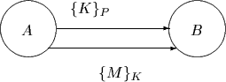

|
Martín Abadi Digital Equipment Corporation Systems Research Center ma@pa.dec.com | |
|
T. Mark A. Lomas Goldman Sachs International Information Security Department Mark.Lomas@gs.com |
Roger Needham University of Cambridge Computer Laboratory and Microsoft Research Roger.Needham@cl.cam.ac.uk |
|
September 4, 1997 (with minor revisions on December 16, 1997) | |
Abstract
Despite their notorious vulnerability, traditional passwords remain important for security. In this paper we describe a method for strengthening passwords. Our method does not require users to memorize or to write down long passwords, and does not rely on smart-cards or other auxiliary hardware. The main cost of our method is that it lengthens the process of checking a password.
| 1. | Introduction |
| 2. | Strengthening User Passwords |
| 3. | Strengthening Secrets over a Network |
| 4. | Comparisons |
| 5. | Conclusion |
| References | |
Traditional passwords are still the most common basis for user authentication. Even systems with sophisticated cryptographic protocols often employ user passwords, for example for encrypting keys. It seems likely that passwords will be pervasive for some time.
Passwords are notoriously vulnerable to attacks [MvOV96,Sch96]. Users often have weak passwords because strong passwords are long and hard to remember. Furthermore, password protection weakens with the passage of time and improvements in computer performance: attackers can rely on faster and faster computers for guessing passwords, while user memory does not seem to be expanding, and passwords do not seem to be getting longer.
Because long passwords are hard to remember, users may write them on pieces of paper, or store them on floppy disks, smart-cards, or other pieces of auxiliary hardware. In some cases, the auxiliary hardware may also contain private keys and perform cryptographic operations. However, pieces of paper, floppy disks, and smart-cards may all fall into enemy hands. Smart-cards could be protected with passwords or PINs, which in turn may be weak; they are also subject to tampering. Thus, auxiliary hardware is not a perfect remedy, and sometimes it can even be a liability: whereas hardware may not be easy to destroy, a user may well forget a password, and may claim that this has happened even under legal pressure to reveal the password.
There has been much work on maintaining security despite weaknesses in passwords. In this paper, we address the different problem of improving passwords. Any effort to improve passwords must be concerned with the trade-off between user memory and security. However, as we show, it is possible to strengthen passwords, without requiring additional user memory and without auxiliary hardware. Our techniques are easy to implement in software and conceptually simple. Their main cost is in access time: a password check may take longer than usual. We arrive at a three-way trade-off between user memory, security, and access time. Since access time is part of this trade-off, our techniques can take advantage of improvements in computer performance: password protection can progress at the same speed as brute-force attacks on passwords.
In section 2, we describe a technique for strengthening passwords; it seems particularly appealing for the protection of data stored in a laptop or other personal computer. In section 3, we describe a variant of our ideas; this variant allows a shared secret to be strengthened over a network. We briefly compare the techniques of sections 2 and 3 in section 4.
The work presented in this paper was carried out in 1996 and early 1997. In the fall of 1997, a reader of a previous version of this paper pointed us to an interesting paper by Manber [Man96], which describes ideas related to those of section 2 and their implementation in the context of Unix.
The problem A computer may sometimes be outside the physical control of its intended users; for example, a laptop may be stolen rather easily. Therefore, it is prudent to restrict access to the computer's functions, for instance by requiring the entry of a password. It is also prudent to protect the files on the computer by encrypting them, for instance under an encryption key derived from the password. The password itself should not be kept in the clear on the computer. In this way, only parties that know the password can use the computer and read the files, even if they have direct access to the computer's storage devices. The password should be strong enough that an attacker cannot guess it and then decrypt the files. In this section we present a technique for strengthening a password for this purpose.
Assumptions We assume that user and computer have some secure means for communicating, perhaps because the user has direct, physical access to the computer, or can establish a secure network connection with the computer.
We also make some cryptographic assumptions, which we state informally as follows. We rely on a function f that is easy to compute but hard to invert. We assume that, given x, the computation of f(x) is fast - for example, it may take just a few microseconds. On the other hand, given y, an x such that f(x) = y cannot be found much faster than by applying f to all possible arguments; this property should hold even when part of x is given along with y. In short, f should be a locally one-way function [MvOV96, chapter 9]. Additionally, we assume that f is collision-resistant. Functions such as MD5 and SHA (or variants) [Sch96] seem fairly likely to have these properties.
A solution We describe our technique in the context of protecting a laptop and the data stored in the laptop. Use of the laptop and access to confidential files depends on possession of a password; the user may type this password into the laptop at log-in time, as usual. Let us call this password P.
In addition to P, we consider a quantity Q, called the password supplement. We refer to the concatenation of P and Q as the full password, and write P+Q for this concatenation. On the laptop, confidential files are encrypted under an encryption key derived from the full password (P+Q).
The length of Q is fixed; with current technology in mind, we envision that this length would be between 16 and 20 bits. The quantity Q is chosen randomly. Both the user and the laptop may contribute to Q, using whatever sources of entropy they have available. While it is often expensive to generate high-quality random bits, existing techniques can be applied without much trouble for constructing a short quantity such as Q. The quantity Q never changes or changes seldom after initial installation. For example, it would be natural for the laptop to pick a new Q every time the user picks a new P.
The laptop holds the result of applying f to the full password. We write H for this result (that is, for f(P+Q)). The quantity H need not be kept secret. The laptop does not hold the full password or any of its parts except while in use by a legitimate user; the full password and even the password supplement should be kept secret.
When the user enters the password P, the laptop searches for Q, by trying all possible quantities X of the same length as Q. For each candidate quantity X, the laptop calculates f(P+X). If f(P+X) equals H, then X is Q (since f is collision-resistant), so access is granted; later, knowledge of P+Q enables the decryption of confidential files. If the user types the password incorrectly, no match will occur (since f is collision-resistant, again), so access will be denied.
Performance consequences Performance can be acceptable even when the password supplement is substantial. For example, if the computation of f takes 2 microseconds and Q is 20 bits long, then the search for Q should take about 1 second on average when the user enters P correctly.
The order in which the candidates X are generated and tried is not essential. We suggest trying them in sequential order, but starting with a random quantity rather than starting at 0. The random start prevents any deductions about Q based on timing, while allowing the search to terminate as soon as f(P+X) equals H. The random start also implies that no values of Q will provide the user with particularly good or bad access time; security would be reduced if the user could somehow control access time by picking Q, or by changing Q when access time is poor.
Security consequences The protection provided by this technique is determined by the strength of the full password P+Q, rather than by the strength of the password P alone.
In particular, suppose that an attacker has stolen the disk of the laptop and is trying to decrypt a confidential file by trying all possible keys. Assuming that keys are properly derived from full passwords, there are as many possible keys as possible values for the full password. If the length of the password supplement is 20 bits, then the search space that the attacker has to explore is 220 larger than it would have been with traditional password protection.
Similarly, suppose that the attacker is trying to learn P+Q by guessing a value, applying f to it, and comparing the result with H, which is stored on the laptop. Because f is collision-resistant, a match would indicate that the attacker has guessed P+Q correctly. Again, if the length of the password supplement is 20 bits, then the search space that the attacker has to explore is 220 larger than the corresponding search space for P.
The protection provided by this technique is equivalent to that which we would obtain through a traditional approach and with a longer password. In short, the user remembers the password and gets the protection of the full password. In order to quantify this improvement, assume for example that the password P is a random, 40-bit quantity, or has equivalent strength, and that the password supplement Q is a random, 20-bit quantity. In this case, the protection goes from mediocre to respectable: the full password is stronger than a DES key [DES77].
Salting It is common that computers do not store passwords in the clear, but instead store something like f(P+S) and S, where S is a salt - added for the purpose of thwarting dictionary attacks. The main difference between the salt S and the password supplement Q is that S is stored and may even be public, while Q is discarded and should be kept secret. Thus, we may summarize our technique as follows: salt the password, then delete the salt, and reconstruct the salt by brute force when the password is checked.
Ideally, P and Q should be long enough to prevent a dictionary attack against P+Q. Otherwise, our technique can easily be enhanced with salting, in the standard manner: the laptop would store f(P+Q+S) and S, where S is a salt.
A generalization for partial password recovery A variant of our technique allows the user to enter only part of P. In that case, the laptop will search for the remainder of P, much like it searches for the password supplement. The search will naturally take longer, perhaps hours or days. This delay may be acceptable in extreme circumstances, for example when the user has accidentally forgotten the remainder of P. Thus, the technique provides the option of remembering more and getting faster response, or remembering less and getting slower response.
The problem Suppose that two parties A and B share a secret P and wish to use it as the basis for confidential communication between them. The messages between A and B may therefore be encrypted, for example applying DES and using P as a key (possibly after padding or truncation). This approach is represented in the following figure, where braces represent DES encryption and M is a typical message.
When P is weak, A and B should be careful not to expose it to off-line attacks. A log of the messages between A and B may provide an attacker with enough information to confirm a guess of P. For example, when the message M contains some recognizable plaintext, an attacker that sees {M}P and that guesses P can confirm the guess by decrypting {M}P. The attacker can try many guesses, by brute force, without being detected.
When A and B share a weak secret, therefore, they may wish to strengthen this secret, or (equivalently) to establish a new, stronger shared secret. A natural approach is for A to create a new secret and to send it to B, signed and encrypted under P. In turning this approach into a concrete protocol, one needs to choose particular signature and encryption mechanisms, as well as any additional fields for A's message. When P is weak, some naive choices result in poor protocols that permit off-line attacks. For example, the following picture shows a poor protocol, in which K is a new shared secret:

Again, an attacker may use a log of the protocol messages for confirming a guess of P. This kind of weakness unfortunately appears in current systems where a strong key is stored encrypted under a user password.
Several recent, sophisticated protocols [LGSN89,GLNS93,BM92,BM93] impede off-line attacks. However, these protocols are difficult to design and to analyze, and sometimes permit on-line attacks [Pat97].
A solution The ideas of section 2 lead to a simple protocol for strengthening a shared secret P. First, A invents a quantity Q of a fixed length, and sends f(P+Q) to B. (Optionally, A could salt P+Q.) When B receives A's message, B searches for Q, much as the laptop searches for Q in the technique of section 2. As a result, A and B share the longer secret P+Q, which they may use for encrypting messages. This protocol is represented in the following figure:
After running this protocol, A and B could use P+Q as the basis for exchanging an even longer secret through a standard protocol.
Performance consequences The main cost of this protocol is that B has to perform an exhaustive search for Q. On the other hand, the protocol imposes no great burden on A after the invention of Q. Because of this asymmetry, it is useful to apply some good judgement in choosing the roles of A and B when the protocol is instantiated. For example, one may let A be a heavily-used server, and B be a client with abundant idle cycles (rather than vice versa). Much as in section 2, performance can be acceptable for the client even when Q is fairly substantial, for example 20 bits long.
Cryptographic assumptions and security consequences Like the technique of section 2, this protocol relies on the assumption that f is a locally one-way function. Assuming in addition that f is collision-resistant, this protocol should make an off-line attack on P roughly 2n times more expensive than the corresponding attack with a naive protocol, where n is the length of Q. After a run of this protocol, an attacker could confirm a guess P' of P by calculating f(P'+X) for all 2n possible values of X. Since f is collision-resistant, a match f(P'+X) = f(P+Q) would indicate that P is P'.
Complete collision-resistance does not seem absolutely necessary for this protocol. As long as f(P+Q) = f(P+Q') implies Q = Q', the two parties A and B successfully agree on the value of Q. It may be acceptable that f(P+Q) = f(P'+Q') when P and P' differ and Q and Q' differ. Such a collision may create confusion for A and B, but perhaps this confusion can be tolerated. The collision could also impede an attack, because it makes it harder to confirm a guess of P.
Related work: stretching secrets Recently and independently, Kelsey, Schneier, and Wagner invented a protocol similar to ours [Wag97]. In their protocol, there is no analogue to Q; instead, the password P is stretched by repeated application of a function f:
Here n is a large number, such as 220. This protocol achieves some of the same desirable properties as ours. There are however several interesting differences between the two protocols. Some of the differences are:
In the technique of section 3, two parties A and B strengthen a secret P by exchanging a message f(P+Q) on an untrusted communication medium. We may say that the technique of section 2 is an instance of the technique of section 3, where the untrusted communication medium is a laptop, and where A and B are the same user at different times.
An important difference is in the nature of A and B. In section 3, both A and B must be capable of computing f, so they are probably not human users. In the technique of section 2, on the other hand, the laptop is trusted to manipulate P and to compute f for a short time, while under the control of a human user.
The two techniques could be applied in combination. For example, after a user has entered the same P on several computers, these computers may agree on a single Q by exchanging their values for f(P+Q).
Password strengthening is a compatible extension of traditional password mechanisms. It increases the security of passwords, without requiring users to memorize or to write down long strings. Password strengthening does not assume any extra hardware, and does not introduce any of the vulnerabilities that come with extra hardware. These characteristics should make password strengthening easy to adopt, and appealing in practical applications.
| [BM92] | Steven M. Bellovin and Michael Merritt. Encrypted key exchange: password-based protocols secure against dictionary attacks. In Proceedings of the 1992 IEEE Computer Society Symposium on Research in Security and Privacy, pages 72-84, May 1992. |
| [BM93] | Steven M. Bellovin and Michael Merritt. Augmented encrypted key exchange: a password-based protocol secure against dictionary attacks and password file compromise. In Proceedings of the First ACM Conference on Computer and Communications Security, pages 244-250, November 1993. |
| [DES77] | Data encryption standard. Fed. Inform. Processing Standards Pub. 46, National Bureau of Standards, Washington DC, January 1977. |
| [GLNS93] | Li Gong, T. Mark A. Lomas, Roger M. Needham, and Jerome H. Saltzer. Protecting poorly chosen secrets from guessing attacks. IEEE Journal on Selected Areas in Communications, 11(5):648-656, June 1993. |
| [LGSN89] | T. Mark A. Lomas, Li Gong, Jerome H. Saltzer, and Roger M. Needham. Reducing risks from poorly chosen keys. Proceedings of the 12th ACM Symposium on Operating System Principles, ACM Operating Systems Review, 23(5):14-18, December 1989. |
| [Man96] | Udi Manber. A simple scheme to make passwords based on one-way functions much harder to crack. Computers and Security, 15(2):171-176, 1996. |
| [MvOV96] | Alfred J. Menezes, Paul C. van Oorschot, and Scott A. Vanstone. Handbook of Applied Cryptography. CRC Press, 1996. |
| [Pat97] | Sarvar Patel. Number theoretic attacks on secure password schemes. In Proceedings of the 1997 IEEE Symposium on Security and Privacy, pages 236-247, May 1997. |
| [Sch96] | Bruce Schneier. Applied Cryptography: Protocols, Algorithms, and Source Code in C. John Wiley & Sons, Inc., second edition, 1996. |
| [Wag97] | David Wagner. Private communication. June 1997. |